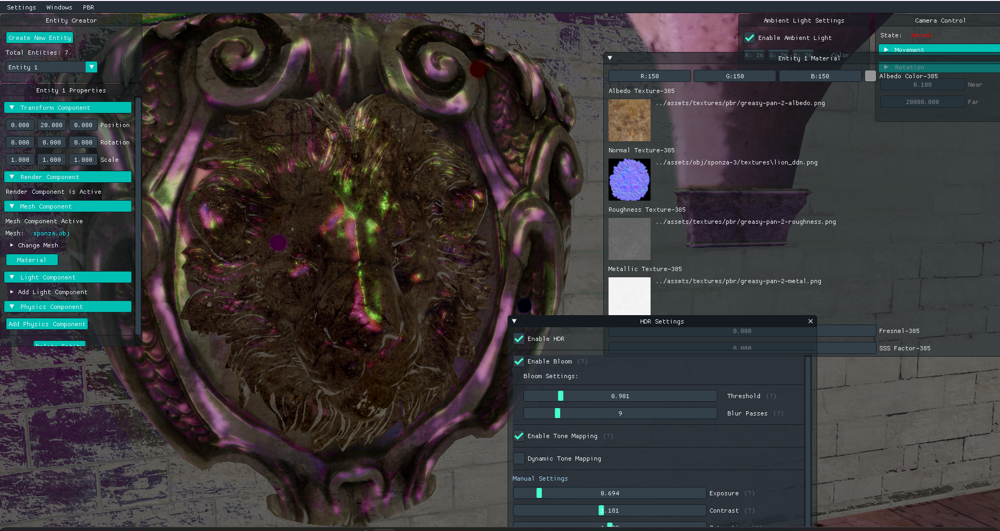
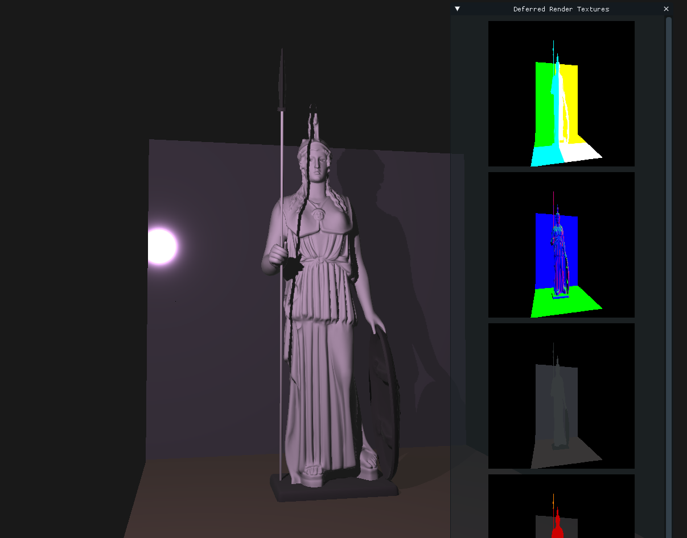
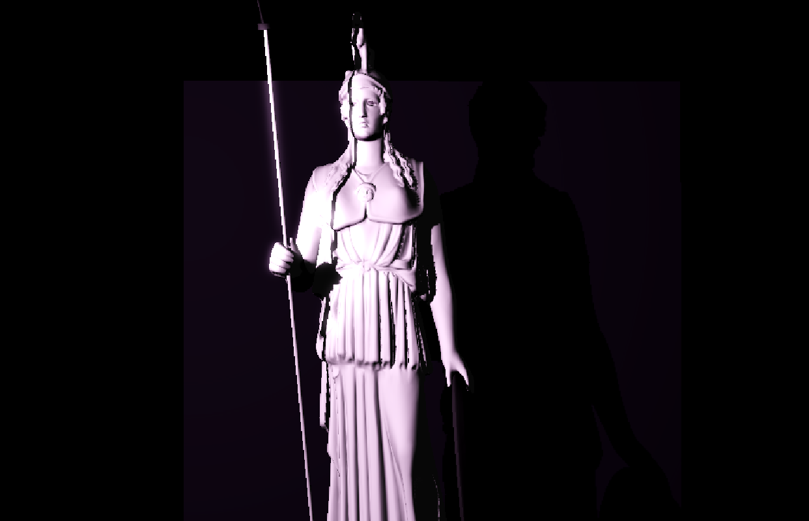
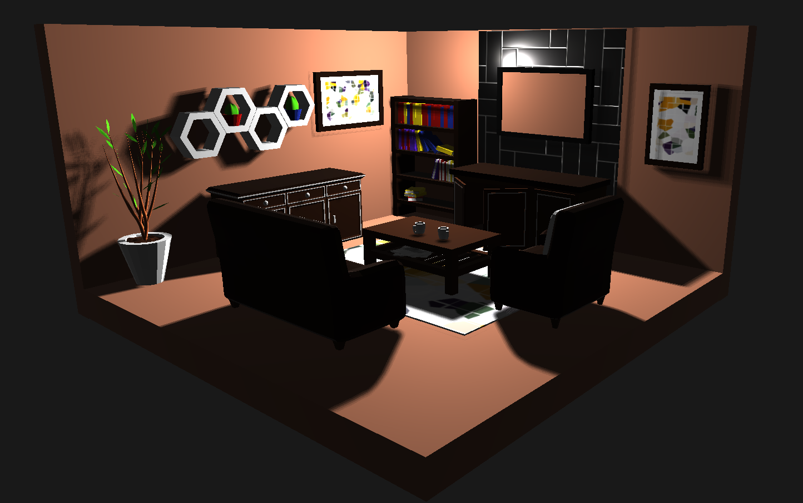

Raftel Graphics Engine
- role
- Co-author, engine and rendering
- stack
- C++ · OpenGL · ImGui · Lua
- team
- 2 programmers
Raftel Engine is a collaborative real-time renderer written from scratch in modern C++ and OpenGL. The goal was to architect a teaching engine that mirrors the feature set and workflows of contemporary AAA tools while remaining lean enough to reason about in the classroom.
The renderer ships with both forward and deferred pipelines, physically based shading, HDR post-processing, cascaded shadow maps, screen-space reflections, bloom, and tone mapping. Assets flow through a material graph and an Entity-Component System that supports hierarchical transforms and instancing.
Tooling sits at the heart of the project. An ImGui-powered editor exposes live tweaking of render stages, debug visualisation, and profiling hooks. Lua scripting injects gameplay logic, a JobSystem spreads heavy work across threads, and a lightweight physics layer handles collisions and gravity. All of this is documented through an API site generated from the codebase itself, encouraging other students to iterate on top of it.





credits
- Authors
- Carlos Mazcuñán, Marc Folgado
tip: use ← → to move between projects